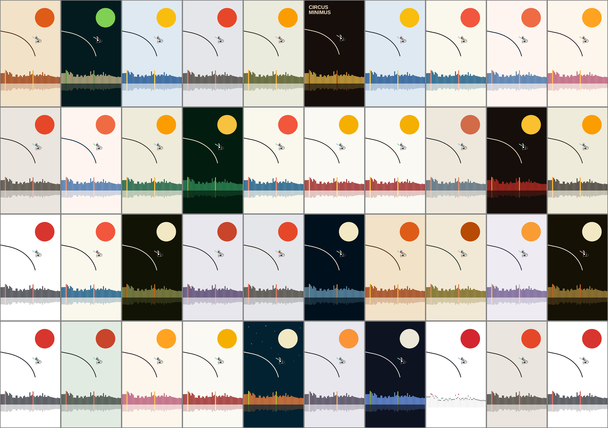
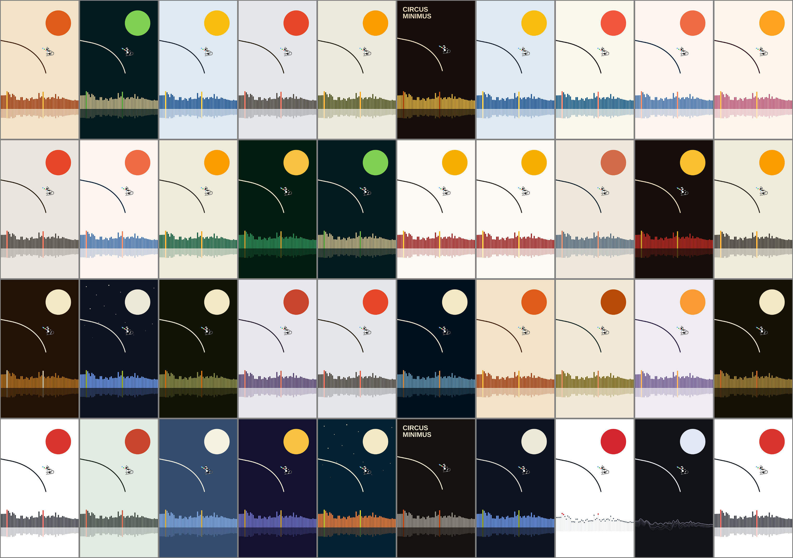
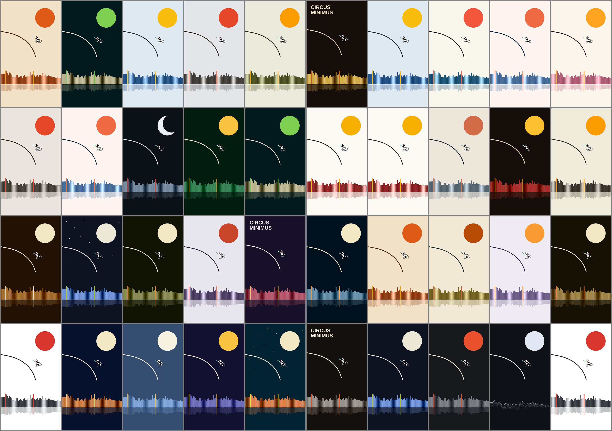

Forty videos, as the chooser draws them
The same forty videos drawn three times, with light themes taking 75 %, 60 % and 50 % of them. One still each, same song, same moment. Themes that are too alike count as one; a theme's approved variants (stars, crescent, dots, strands) appear a quarter of the time on that theme.
| Light share | One light theme | One dark theme | Videos with a variant |
|---|
| 75 % (today) | 3.3 % | 0.8 % | 1.9 % |
| 60 % | 2.6 % | 1.3 % | 3.0 % |
| 50 % | 2.2 % | 1.6 % | 3.6 % |
75 % light (today)

60 % light

50 % light
